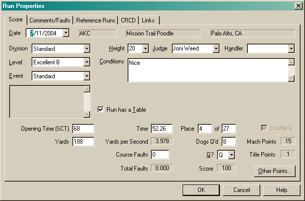
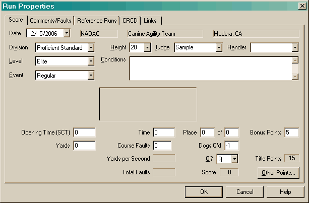
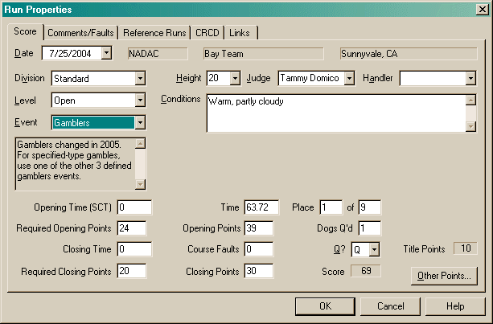
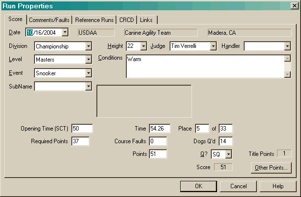
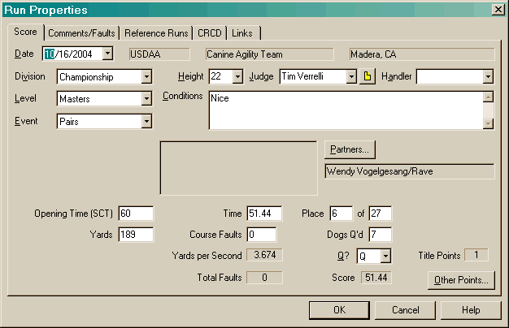
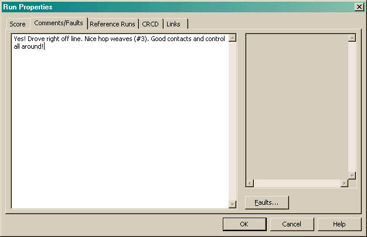
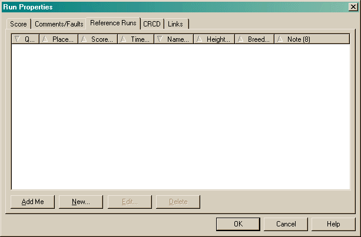
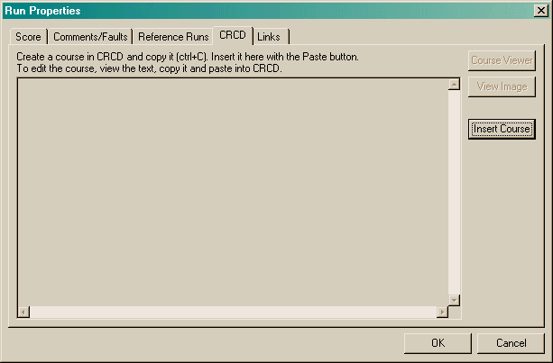
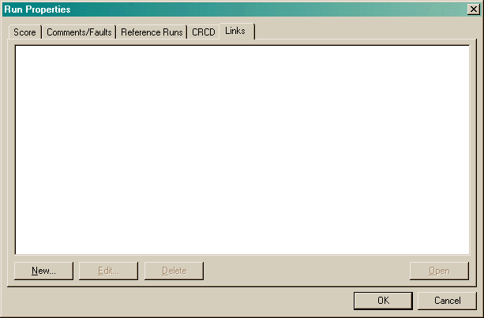

The Run Properties dialog allows you to enter all the information about a run you have done. Each run belongs to the trial in which you created it, so the Venue, Club and Location fields are only shown for convenience.
The following images show a variety of styles this dialog may take. The fields that are visible depend on the type of run that is selected.





When you create a new trial, the date will default to either the current date (if there are no other runs in the trial), or the last day that has been entered in the current trial. The Division, Level and Event fields are dependent on each other. You will see no data in the lower ones until you have selected a value in the upper ones. Only values that are valid (determined by the configuration) are shown.
Several fields will remember their values each time you create a run: Division and Level (if the values are valid for the given venue), Height, Judge and Handler.
The Conditions field is where you can enter the surface conditions, weather, etc.
The Number of Obstacles field allows you to enter the number of obstacles you attempted. This allows tracking the number of obstacles per second which can greatly aid in planning gamble-style courses. The Obstacles per second field is computed using the dog's time, unless this is a run that has an opening and closing period. In that case, the lessor of the opening time and dog's time will be used.
The Place field is where you can enter how you did. If you do not know how you did (or a placement isn't valid due to elimination, etc) or you do not know how many dogs competed, simply leave this value as 0. The program will know not to use this data then.
The Dogs Q'd field is where you can record how many dogs qualified. If you do not know this value, leave this as -1. Do not leave it as 0 (as with the placement fields) as that would infer that no dogs qualified.
The Q? field is where you record the qualifying status. Available values are: NA (Not applicable), Q (Qualified), NQ (Not Qualified), E (Eliminated) or SQ (Super Qualifier, only shown in applicable events).
The Score field will show the score for this run. The meaning of this value is totally dependent on what the event is.
The Title Points will display how many points you have earned towards a title.
The Bonus Points field will be visible if the configuration has enabled that feature for this run. This allows you to enter extra titling points that are not otherwise computed automatically. This applies specifically to NADAC when a Bonus Box is present and successfully completed. Please note, no verification is done on this field which allows you to enter any value you want. Currently, the only values that should be entered are 0 and 5. And 5 should only be entered on a qualifying run with no faults.
The Other Points button allows you to configure points you may have earned for this run that are not directly recognized by Agility Record Book. For instance, breed points. This will bring up a dialog listing all the Other Points you have entered. When you create a new entry or edit an existing one, you will be taken to the Other Points dialog.
Any fields not mentioned apply to a particular event. Relevant fields will be visible, others will be hidden (as the images above show). When you enter an event that is based on time-plus-faults, time faults will not be computed. If you enter 0 for a run that is faults-then-time, time faults will also not be computed. The YPS (yards per second) will be computed automatically when you enter a course time and yardage. If the yardage is not known or not applicable, leave this value as 0.

The Comments/Faults page allows you to enter any comments you wish to make. The Faults button will bring up a dialog listing all the faults (these are also shown in the right side above). From that dialog, you can create a new entry or edit an existing one in the Fault dialog.

The Reference Runs pane allows you to record information about other dogs who did this event. This allows you to see how you are doing compared to others. The Add Me button allows you to easily add your own information here (assuming you have filled out the 'Score' tab already).

The CRCD (Clean Run Course Designer) page allows you to copy a course from CRCD into Agility Record Book. When the Insert Course button is active, it will copy any text that is in the clipboard into this window. It may not be a valid CRCD image - Agility Record Book does not know that. It simply acts as a storage area for text. If you copy the course while CRCD is running, CRCD will also place an image on the clipboard. When you insert the course, Agility Record Book will insert both the text and the image. If the image is available, you will see it in the above window and the Course Viewer button will be active. That button will bring up a window that will allow you to resize the image.

The Links pane allows you to create links to external files. This can be convenient if you have used a scanner to create an image of a course. If you move (via the file system) any link or wish to copy this file to another machine, use the Find Links dialog to find any links that may need either fixing or copying. The New and Edit buttons will take you to the Select URL dialog.